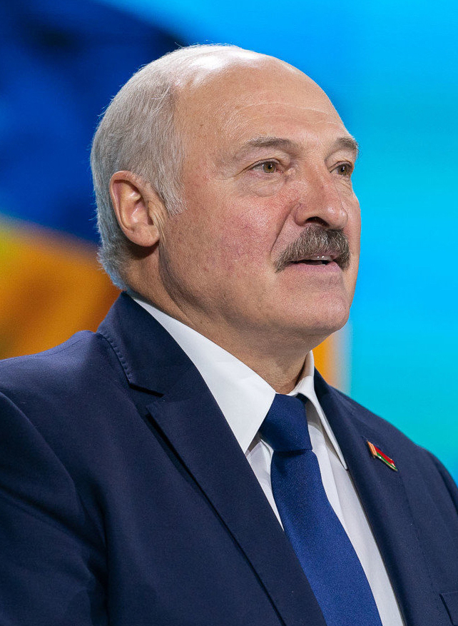
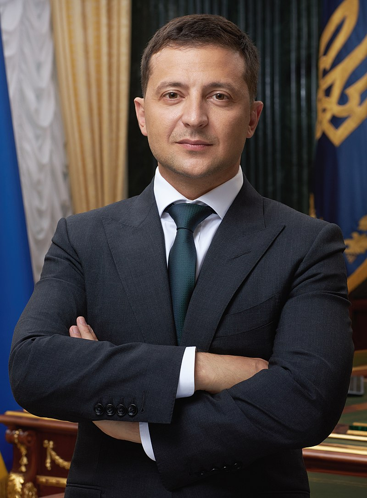

Государства и географические регионы
Постсоветские государства обычно делят на следующие пять групп. Принцип, по которому государство относят к той или иной группе, основывается на географических и культурных факторах, а также на истории взаимоотношений с Россией.
- Россия (в свою очередь состоит из нескольких географических регионов: Восточная Европа, Прибалтика, Северная Азия и Центральная Азия);
- Прибалтика (Северная Европа): Латвия, Литва и Эстония;
- Восточная Европа: Белоруссия, Молдавия и Украина;
- Закавказье (Передняя Азия и Восточная Европа): Азербайджан, Армения и Грузия;
- Центральная Азия: Казахстан, Киргизия, Таджикистан, Туркмения и Узбекистан.
Список стран на территории Постсоветского пространства1
| Страна | Столица | Герб и Флаг | Герб и Флаг Республики (до распада СССР) | Дата независимости / дата распада СССР | Территория (км2) | Население | Примечания |
|---|---|---|---|---|---|---|---|
Государства — члены ООН    |
|||||||
| Республика Беларусь (Белоруссия) |
Минск | 

|


|
25 августа 1991 | 207 600 | 9 475 600 |
Официально —
25 декабря 1951 — 25 августа 1991 — объявлена независимость, без проведения референдума о выходе из СССР. 19 сентября 1991 — официальное название и флаг изменены на Республика Беларусь (белор. Рэспубліка Беларусь). 26 декабря — независимость состоялась де-факто из-за прекращения существования СССР.
7 июня 1995 — изменён белорусский флаг: Республика Беларусь - член |
|
Российская Федерация (Россия) |
Москва | 

|


|
12 декабря 1991 | 17 125 191 | 146 781 095 |
Официально — Образован по Союзному договору от 30 декабря 1922 года на месте бывшей Российской империи объединением четырёх советских республик — РСФСР, Украинской ССР, Белорусской ССР и ЗСФСР.
1 ноября 1991 — Съезд народных депутатов РСФСР внёс поправки в Конституцию РСФСР и,
среди прочего, изменил российский флаг — 12 декабря 1991 — Верховный Совет РСФСР денонсировал Договор об образовании СССР 1922 года, Россия вышла из состава СССР. 21 декабря 1991 — Совет глав государств СНГ принял решение о поддержке продолжения членства Советского Союза в ООН, включая Совет Безопасности, Россией. 24 декабря 1991 президент РСФСР Борис Ельцин проинформировал Генсека ООН о том, что членство Советского Союза в ООН будет продолжено Российской Федерацией (РСФСР), в связи с чем просил вместо названия «Союз Советских Социалистических Республик» использовать наименование «Российская Федерация». 25 декабря 1991 — Верховный Совет РСФСР принял закон об изменении названия государства с Российская Советская Федеративная Социалистическая Республика на Российская Федерация (Россия). 26 декабря 1991 — Верхняя палата Верховного Совета СССР (Совет Республик) приняла Декларацию № 142-Н о прекращении существования СССР.
11 декабря 1993 — изменён российский флаг: В Уставе ООН до сих пор именуется Союзом Советских Социалистических Республик. Российская Федерация - член |
| Союз Советских Социалистических Республик → Россия 2 | Москва | 

|
26 декабря 1991 | 22 402 200 | 292 610 734 | ||
| Украина | Киев | 

|


|
24 августа 1991 | 603 549 | 42 248 598 |
Официально — Украинская Советская Социалистическая Республика (укр. Українська Радянська Соціалістична Республіка), республика в составе СССР.
21 ноября 1949 — изменён украинский флаг: 16 июля 1990 — Верховный Совет УССР принял «Декларацию о государственном суверенитете Украины» 24 августа 1991 — Верховный Совет УССР принял «Акт провозглашения независимости Украины» и изменил официальное название на Украина (укр. Україна) 1 декабря 1991 — состоялся Всеукраинский референдум 1991 года, на котором было подтверждено провозглашение независимости Украины
28 января 1992 — изменён украинский флаг: Украина - член |
 СНГ, член СГРБ,член ЕАЭС.
СНГ, член СГРБ,член ЕАЭС.
Фотографии глав Государств Постсоветского пространоства
Республика Беларусь 🇧🇾
Александр Григорьевич Лукашенко
Президент Республики Беларусь (с 20 июля 1994)
Российская Федерация 🇷🇺

Президент Российский Федерации (с 7 мая 2012)
Украина 🇺🇦
Владимир Александрович Зеленский
Президент Украины (с 2019)
Примечания:
- На это сайте будут представлены страны: Беларусь, Российская Федерация, Украина (с ДНР и ЛНР). Постепенно будут добавляться другие страны Постсоветского пространства.
- "Российская Федерация является правопреемником Союза ССР своей территории, а также правопреемником (правопродолжателем) Союза ССР в отношении членства в международных организациях, их органах, участия в международных договорах, а также в отношении предусмотренных международными договорами обязательств и активов Союза ССР за пределами территории Российской Федерации" - Статья 67.1 ч.1 Конституции РФ.